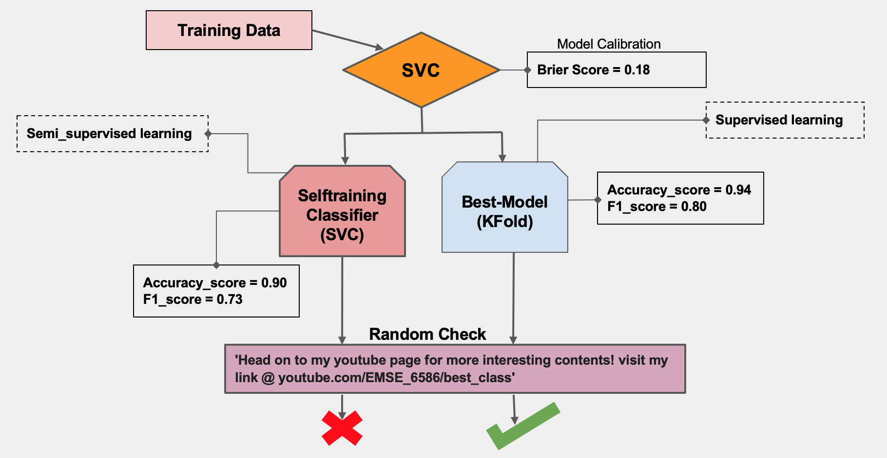
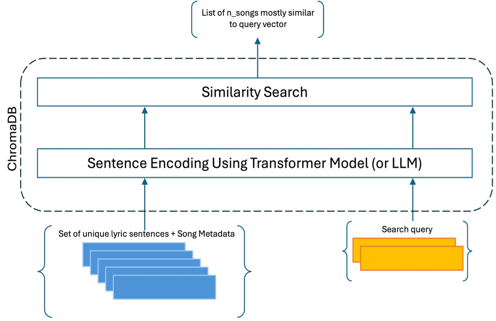

Quantifying Human Perception Beyond Statistical Mean Is Apple Really Behind in the AI Race? CNBC’s pre-WWDC analysis suggested so, with Apple barely mentioning ‘AI’ compared to rivals. But WWDC 2024 flipped the script, revealing unexpected AI innovations. Even Google’s Sundar Pichai joked about the AI buzz. Does talking less mean doing less? Let’s find out! 
Information Retrieval Using Semantic Recommendatin System. Use Case: Lyric-Based Music Finder Traditional data retrieval methods rely on keyword matching, but they fall short when it comes to capturing meaning, context, or handling slang and misspelled words—especially in tasks like identifying songs from vague lyrics. Here, we develop an innovative solution using transformer models to encode semantic meaning and sytax in order to overcome these challenges. 